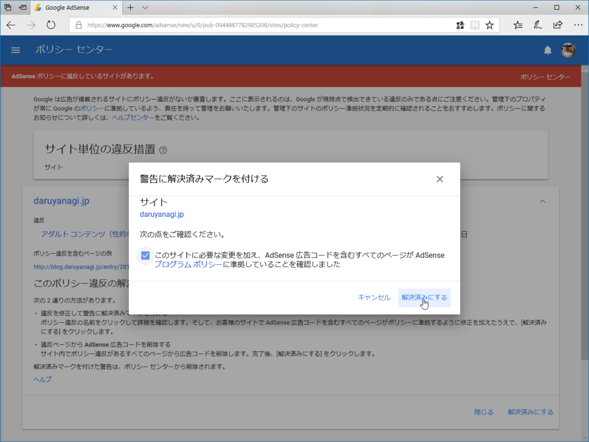

日記：相変わらず眠れない
公開日：
この前、Google から「エロい記事消せ」って怒られた。
お客様
お客様の AdSense アカウントは AdSense のプログラム ポリシーに準拠するよう修正していただく必要がありますので、警告メッセージとしてお知らせいたします。お客様に必要なご対応などの詳細については、下記をご覧ください。
- 対象のウェブサイト: daruyanagi.jp
- ポリシー違反が発生しているページの一例: http://blog.daruyanagi.jp/entry/2013/09/10/072739
- 必要な対応: AdSense のプログラム ポリシーに準拠するよう、必要な変更をただちに行ってください。
- アカウントの現在のステータス: 有効
- 違反に関する説明
アダルトまたは成人向けコンテンツに Google 広告を掲載することは許可されません。これには性的嗜好に関するコンテンツや、性的な補助製品について宣伝、販売、取り上げているサイトが含まれます。これには次のものが含まれますが、これらに限定されません。
- 不適切とみなされる可能性のある性的な執着や慣習
- 性的行為のための道具（バイブレーター、人工ペニス、潤滑剤、性的ゲーム、セックス ドールなど）
- 陰茎増大および豊胸器具
コンテンツを一般向けに保つ方法については、AdSense のプログラム ガイドラインと、ポリシー チームからのヒントをご確認ください。
「頼んでもないのに TEN〇A を送ってくるのやめろください（#^ω^）ﾋﾟｷﾋﾟｷ」みたいなたわいもない（？）内容だったのだけど、これでアウトらしい。この程度のことは放置しておきたいんだけど、ここの広告は数少ない我が収入源でもある。財布を人質に取られては、手も足も出ない。

とりあえず、少し文章を削って、［直したよ］という報告をしておいた。
眠れない
不眠というか、不規則な睡眠が続いている。寝ておきたいときに寝られず、眠ってはいけないときに眠くなる。
寝床に入るとき暗くするとか、あったかくするとか、まぁ、そういうありきたりな対策はあらかたやった。それでもダメなので、要するに精神的なものだろうと思う（精神的といえば聞こえはいいが、要するに「仕事めんどくせえな」みたいな感情だ）。精神のコントロールは難しい。コントロールしようという気持ちそのものが、精神を圧迫する。
なので、最近は、寝よう、眠ろうと頑張ることをスッパリ諦めて、眼が冴えているときにやれるだけの仕事を片付けておき、コアタイムに眠くなっても少しの気合で切り抜けられるように準備をしておくことにした。眠い時は、時間を決めて少しだけ寝る。水曜日と木曜日はそれが功を奏し、ストックの蓄積が安心感をもたらしたのか、睡眠サイクルにも改善の兆しが見えてきていた。
けれど、金曜日はダメだった。連絡がチグハグで、ぽっかりと長い待機時間ができてしまったのがダメだった。なにもせず、ただ眠気に耐えるだけの時間はつらい。いつもなら、そんな時間は投機的実行でもして有効活用する。でも、こんな状態では無駄になったときの徒労ばかりが気にかかり、何も手につかない。「なんで効率よくやろうと思わないんだろう、これを先にすれば、空いた時間であれを進めることができるのに」と、先方の苛立ちばかりが募る。思いやりが失われ、いつもサービスでやっていた配慮もアホらしくなり、「お前らでやれ」と投げやりになってしまう。そして、それがすれ違いを生む。自分にも勘違いがあることに気付くが、うしろめたさを反省に昇華できない。意固地になってるなぁ、と気づいた途端、張っていた気がスッと抜け、軽い吐き気がこみあげてきた。
「あぁ、今日はダメだな」
――と思ったので、その日の仕事はすっぽかすことにした。無職になって、こういうことをしたのは初めてだ。さいわい、最低限のノルマは水曜日と木曜日のストックで達成されている。あっちには悪いと思ったけど、まぁ、いきなり潰れるよりはマシだろう。来週からまた頑張ればいいということにした。
それにしても――眠れないっていうことを差し置いても、最近はだんだんパフォーマンスが下がっていることを実感する。業界もあと何十年ともたないだろうし、先々のことも考えないと詰むなぁ、などと後ろ向きなことばかりが思いやられる――かといって、何も思いつかないのだけど。今までのことをリセットして新しいことするのって、こんなにしんどいことだったのか。以前にも乗り越えてきたことなのに、前回、どんな気持ちでそれをやり遂げたのかが思い出せない。なるほど、ダメになるときはいっぺんにダメになるものだな、と少し思った。
とにかく、今週はすごく長く感じたが、無事、また生き延びてしまった。週末は好きな時間に好きなだけ寝ようと思う。軽く飲みに行くのもいい。世間一般的な人たちが飲みに出る時間にちゃんと起きていられればの話だけど。